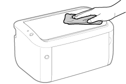

|
Before cleaning the outside of the printer, see "Attention (Cleaning)."
|
1
Turn the printer OFF, then disconnect the cables or cords from the printer.

<How to disconnect the cable or cord>
|
USB cable
|
(2) Turn the computer off.
(3) Disconnect the cable from the printer.
|
|
Power cord
|
(4) Disconnect the power plug from the AC power outlet.
(5) Disconnect the cord from the printer.
|
2
Close the multi-purpose tray and output tray as needed.
3
Firmly wring a soft cloth dampened with water or a mild detergent diluted with water, and wipe off the dirt.

4
After wiping off the dirt, wipe the printer with a dry cloth.
5
When the printer is completely dry, connect the removed cable or cord.
<How to connect the cable or cord>
|
USB cable
|
Connect to the USB connector on the printer.
|
|
Power cord
|
(1) Plug the power cord to the power socket on the printer.
(2) Plug the power plug into the AC power outlet.
|